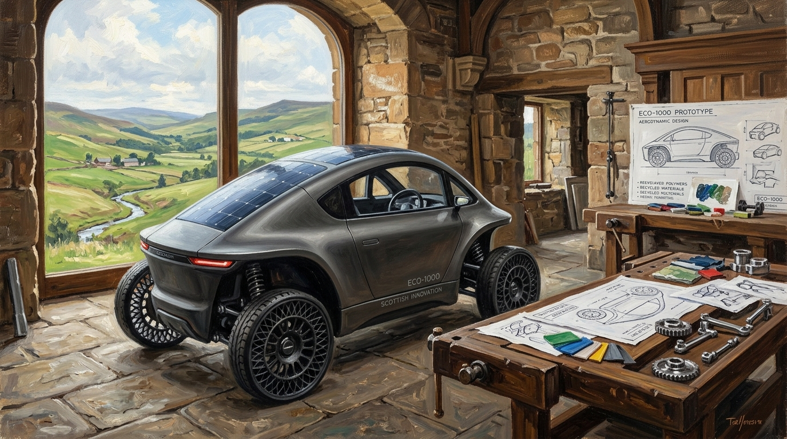

The ECO-1000: A Car Designed for the Future, Not the Past.
A Radical Engineering & Economic Philosophy: Reclaimed Global Waste, Ultra-Lightweight Simplicity, and Affordable Electric Mobility for Working People.

“The future does not have to be bigger, heavier, and more expensive. The future can be lighter, cleaner, simpler, and built from what the world already throws away.” — Trevor Swistchew
Engineering Dossier: Circular Materials & Urban Mobility Thermodynamics
Ellen MacArthur Foundation, European Environment Agency & DfT Commuter DataThe Industrial Paradox: Extracting While Drowning in Waste
Global automotive manufacturing consumes over 12% of the world's primary steel and enormous volumes of virgin polymers annually, yet hundreds of millions of tonnes of industrial polymers and scrap alloys are relegated to landfills or incineration. Reports by the Ellen MacArthur Foundation and the European Environment Agency emphasize that true decarbonisation is impossible through battery chemistry alone; it requires closed-loop circular systems where vehicle bodies, structural members, and wear components are fabricated from secondary post-consumer feedstocks, bypassing resource depletion.
For over a century, the world has been told that transportation must be expensive, complicated, wasteful, and dependent on vast industrial systems that consume enormous quantities of resources.[1] Every year millions of tonnes of metals, plastics, and other materials are extracted from the Earth.[2] Every year cars become larger, heavier, more complex, and more expensive. Yet roads become more congested, households face rising costs, and mountains of discarded materials continue to grow across the planet.
The ECO-1000 challenges this entire way of thinking.
The ECO-1000 is not simply another electric vehicle. It is a different philosophy altogether. It begins with a simple question: if the materials already exist as waste, why continue extracting new ones?[1][5]
The vehicle is designed around 100% electric propulsion and a manufacturing philosophy based entirely on recycling. Its body is constructed from recycled plastics. Its structural components are formed from recycled metals. Instead of viewing discarded materials as rubbish, the ECO-1000 treats them as a valuable resource waiting to be transformed. Every abandoned metal component, every discarded piece of plastic becomes potential feedstock for a new generation of transport.[2]
The result is a compact two-seat vehicle with a small practical trunk, built not to impress neighbours but to solve transport problems efficiently.
“There are only two pedals. One pedal moves the vehicle forward. One pedal stops it. Reverse is activated from the steering wheel. No traditional gearbox. No complicated transmission. No unnecessary mechanical complexity.”
Transport should be easy. Stripping away hundreds of failure-prone gears, clutches, and lubricants creates reliability through minimalism.
Unlike conventional cars that require thousands of complex components, the ECO-1000 embraces simplicity. There are only two pedals. One pedal moves the vehicle forward. One pedal stops it. Reverse is activated from the steering wheel. No traditional gearbox. No complicated transmission. No unnecessary mechanical complexity.
The philosophy is clear: transport should be easy.
The vehicle's tyres contain no inner tubes. They cannot suffer conventional punctures. They do not depend upon air pressure to support the vehicle. Comfort is provided by a specially engineered flexi-suspension system designed to absorb road imperfections. Instead of relying upon pressurised tyres to provide ride quality, the suspension itself performs the task. This approach aims to increase durability while reducing maintenance requirements.
The car is powered by electricity and supported by solar panels integrated into the roof and rear surfaces. The solar panels are not intended to replace charging but to supplement energy generation whenever sunlight is available. Every additional watt generated is energy that does not have to be supplied elsewhere.
A fully rechargeable battery designed for a five-year replacement cycle, targeting replacement costs in the region of hundreds rather than thousands of pounds. When battery maintenance becomes predictable and affordable, ordinary working households are emancipated from predatory vehicle financing.[4]
A key component is the battery system. The concept proposes a fully rechargeable battery designed for a service life of approximately five years before replacement. Battery prices continue to evolve, but the target assumes a replacement cost in the region of hundreds rather than thousands of pounds. The objective is to make maintenance predictable, affordable, and accessible to ordinary households.
Weight reduction sits at the heart of the design.[6] Modern vehicles frequently weigh well over a tonne and sometimes considerably more.[3] The ECO-1000 aims to be dramatically lighter. Every kilogram removed improves efficiency. A lighter vehicle requires less energy to move, less energy to stop, and a smaller battery to achieve useful driving range.
The Thermodynamic & Economic Law
“Lower weight means lower energy consumption. Lower energy consumption means smaller battery requirements. Smaller batteries mean reduced manufacturing costs. Reduced costs mean greater affordability.”
— Trevor Swistchew • 2026
This creates a virtuous cycle. Lower weight means lower energy consumption. Lower energy consumption means smaller battery requirements. Smaller batteries mean reduced manufacturing costs. Reduced costs mean greater affordability.
The economic implications are potentially significant.
Imagine a vehicle designed from the beginning to use materials the world already throws away. Imagine a car requiring minimal maintenance. Imagine no petrol, no diesel, no oil changes, no exhaust system, no clutch, and no complicated transmission. Imagine a vehicle affordable enough for ordinary working people rather than a luxury purchase requiring years of debt.
The purpose of the ECO-1000 is not to compete in a horsepower race. It is not intended to become a symbol of status. It is intended to become a practical machine that carries people safely and efficiently from one place to another.
Its compact dimensions reduce congestion. Smaller vehicles occupy less road space. Smaller vehicles require less parking space. Smaller vehicles consume less energy. In crowded cities, where one person often travels alone, a large vehicle can represent a significant waste of resources.[3] The ECO-1000 addresses this reality directly.
Environmental benefits extend beyond operation. Because the design prioritises recycled materials and future recyclability, the vehicle itself becomes part of a circular manufacturing system.[1][5] At the end of its service life, its materials can re-enter production rather than landfill.
The broader vision reaches even further.
What if transport no longer depended on extracting ever more resources? What if manufacturing focused on recovering existing materials? What if affordable electric vehicles became available to billions of people rather than a privileged minority? What if simplicity replaced excess?
The ECO-1000 represents an attempt to answer those questions.
Critics may argue that such ideas are unrealistic. New ideas are often dismissed before they are tested. Yet every transformative technology began as an idea that challenged established assumptions. The important question is not whether existing industries approve of the concept. The important question is whether the concept delivers practical value.
A small electric vehicle built from recycled materials, powered by electricity, easy to maintain, inexpensive to operate, energy efficient, compact, and recyclable represents a fundamentally different approach to transportation.
The ECO-1000 does not seek to be the most luxurious car in the world.
It seeks to be one of the most sensible.
Its vision is simple: take the waste the world already creates, turn it into useful transport, reduce dependence on fossil fuels, lower ownership costs, reduce congestion, conserve resources, and provide practical mobility to ordinary people.
The Manifesto of Sensible Mobility
“The future does not have to be bigger, heavier, and more expensive.”
“The future can be lighter, cleaner, simpler, and built from what the world already throws away.”
© 2026 Trevor Swistchew. All rights reserved.